Desarrollador full stack · Valencia, España
38 proyectos documentados y 9 funcionando con usuarios reales: CRM inmobiliarios multi-tenant, gestión de alquileres con pagos y firma digital, y herramientas de escritorio con IA local. De cada uno tienes aquí el stack, la arquitectura y el código.
/** Devuelve el payload o null si no es válido. */
public static function decode(string $token): ?array
{
[$h, $p, $s] = explode('.', $token);
$expected = self::b64url(hash_hmac(
'sha256', "$h.$p", cfg('jwt_secret'), true
));
if (!hash_equals($expected, $s)) return null;
$payload = json_decode(self::b64urlDecode($p), true);
if ($payload['exp'] < time()) return null;
return $payload;
}Pint League — verificación de firma HS256 en tiempo constante
Selección de trabajos que muestran capacidad real para construir productos completos
Cifras contadas sobre el código de los repositorios, sin duplicar las versiones archivadas de un mismo proyecto.
Este portafolio está pensado para que puedas evaluar mi trabajo de forma rápida: qué he construido, qué tecnologías uso y cómo resuelvo problemas reales con código.
Aquí encontrarás CRM y sistemas de gestión como TinoProp CRM (multi-tenant, 19 módulos) o RoomManager, herramientas de escritorio con IA local como LocalCoder, software desarrollado en empresa como Soft-Scrappeo, y webs corporativas como CAS Real State o MP Solutions.
Los proyectos académicos van marcados como tal y están al final del listado: son ejercicios de clase, no producto. Prefiero que veas la diferencia antes de abrirlos.
La idea no es solo enseñar pantallas bonitas: es mostrar que puedo diseñar, programar y publicar soluciones útiles, con foco en experiencia de usuario, bases de datos y despliegue.
Tecnologías y herramientas que domino en el desarrollo de aplicaciones
Una selección de proyectos que demuestran mis habilidades en desarrollo
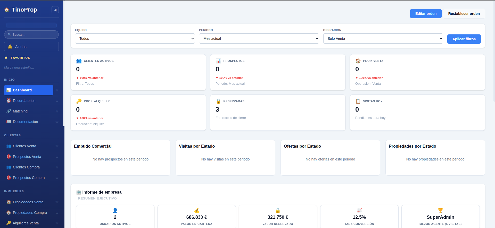
CRM inmobiliario multi-tenant con 19 módulos y jerarquía de 7 roles. Varias inmobiliarias comparten instalación viendo solo sus datos: pipeline Kanban, matching demanda-oferta, gestión documental, tickets internos e i18n.
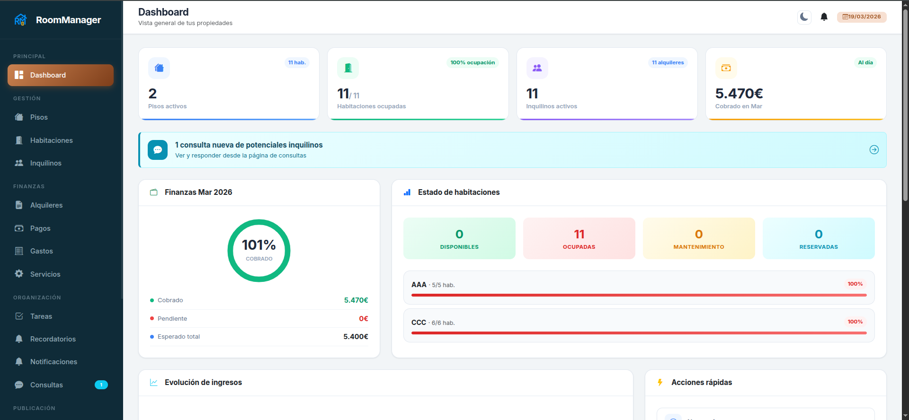
Plataforma de gestión de alquiler por habitaciones (coliving / rent to rent). Contratos y recibos en PDF, caja y liquidaciones a propietarios con firma digital, suscripciones vía Stripe y oferta pública de habitaciones.
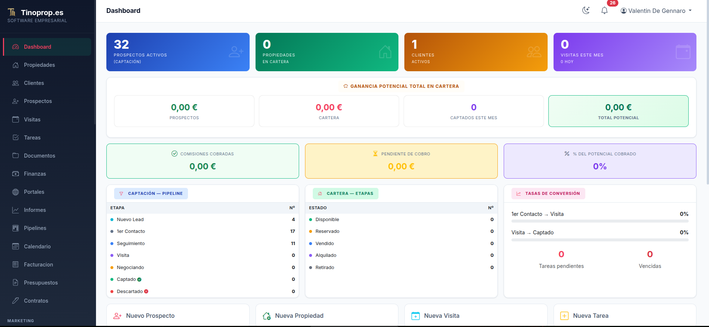
CRM inmobiliario con 14 módulos y segundo factor de autenticación TOTP implementado desde cero. Incluye motor de matching entre demandas y cartera, facturación con conversión de presupuestos y auditoría de actividad.
CRM de captación de leads B2B desarrollado durante las prácticas en empresa. Rastrea empresas, las enriquece con datos públicos y las clasifica por código CNAE, con roles de admin y comercial, asignaciones, chat y notificaciones.
Plataforma de juegos multijugador para 4-20 personas en tiempo real y sin registro. Micro-router PHP propio, servidor WebSocket con Ratchet y ReactPHP, e implementación completa de las reglas del Truco argentino.
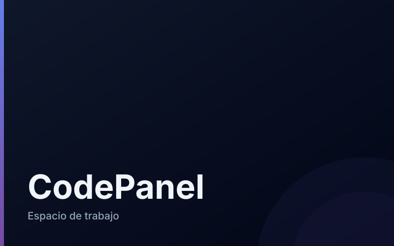
Espacio de trabajo para programadores: proyectos, ideas, clientes, presupuestos, bitácora y tareas en una sola interfaz. Calcula rentabilidad por proyecto cruzando ingresos, tiempo registrado y costes de infraestructura.
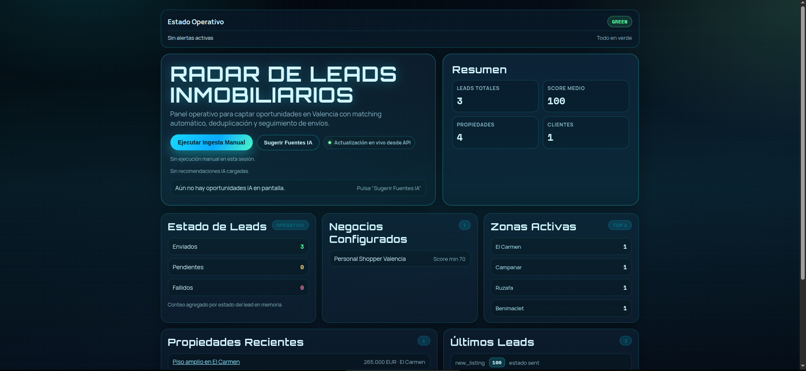
Backend que automatiza la captación de inmuebles en portales de Valencia: pipeline de ingesta con cron, normalización, matching por filtros de cliente, scoring con IA local y avisos por Telegram y WhatsApp.
App social para registrar rondas en grupo con foto y competir por puntos. Rankings semanal, mensual, anual y global, 16 logros con progreso, rachas diarias, MVP de la noche, retos, eventos, amigos y chat con push.
Sistema de reserva de citas conectado a la publicidad de Meta. Al confirmar, crea la sala de Google Meet, avisa por WhatsApp y programa recordatorios automáticos a 24 h y 2 h mediante cron.
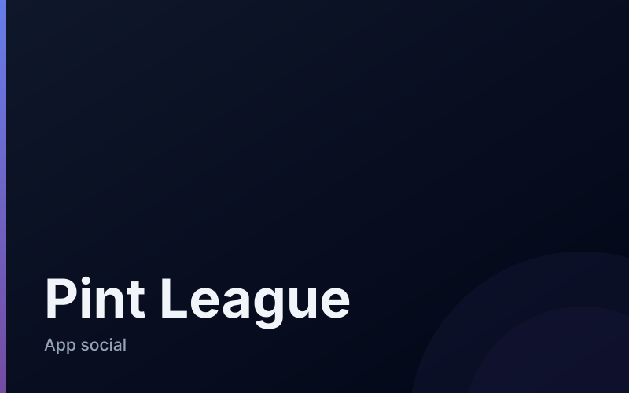
Reescritura completa de DrinkLegends sobre PHP sin framework: router, autenticación JWT, servicio de notificaciones push y procesado de fotos implementados a mano, con SPA vanilla de 8 vistas y router propio.
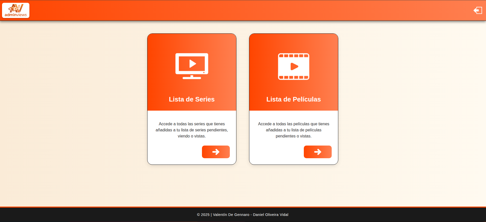
Gestor personal de series y películas con listas por estado (viendo, vistas, pendientes). Autocompleta títulos y carátulas desde la API de TheMovieDB y cifra las contraseñas con password_hash.
PWA de seguimiento de propietarios, inquilinos y visitas para una inmobiliaria. Plantillas de mensaje reutilizables, autenticación por token con caducidad e instalador protegido por clave.
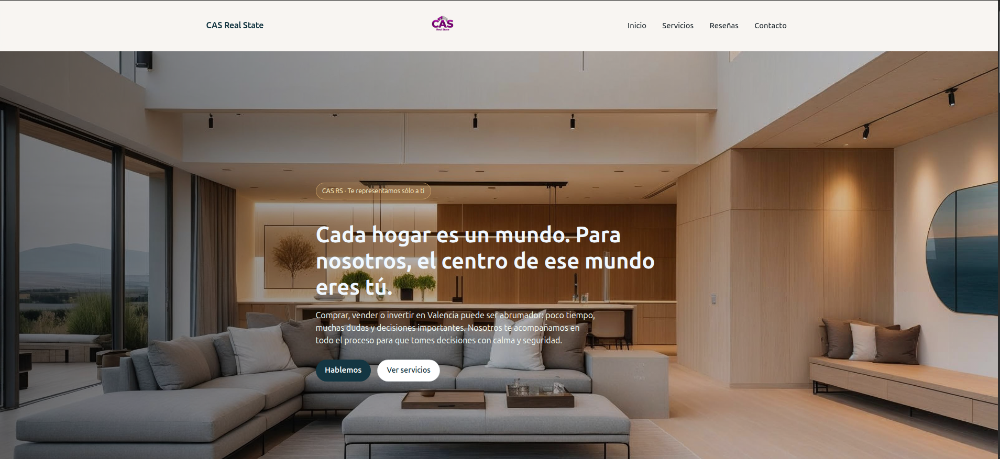
Web corporativa de una agencia inmobiliaria de Valencia, orientada a conversión. Hero panorámico, explicación paso a paso de cada proceso, reseñas de clientes y agenda de citas.
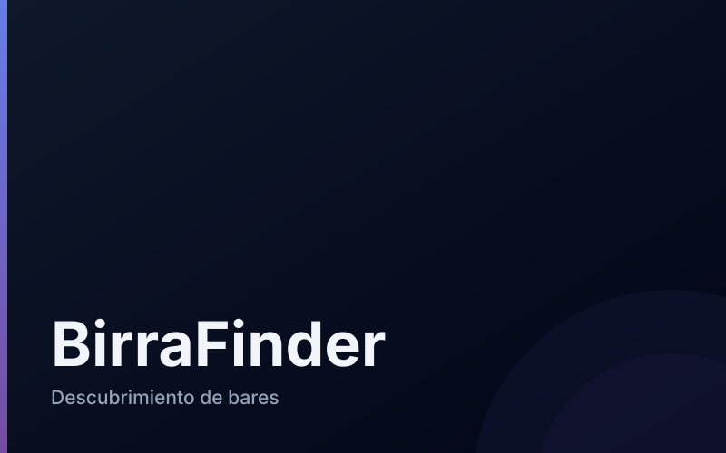
Diario de bares con comunidad: geolocaliza locales con Google Places, guarda pendientes y visitados con puntuación, y genera rankings de los más visitados y mejor valorados por todos los usuarios.
Web paródica sobre la cultura Linux y el software libre, con confesionario tecnológico, oráculo del Kernel, BSOD simulado y una biblia virtual repartida en siete libros navegables.
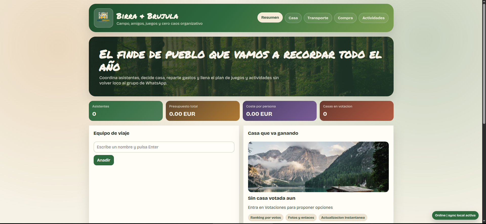
App para organizar un viaje en grupo de principio a fin: votación de casa, transporte, lista de compra, actividades e itinerario. Calcula el coste por persona y sugiere quién paga a quién para cuadrar cuentas.
Landing corporativa de un call center argentino. Todos los datos de empresa viven en un único config.js que rellena contacto, páginas legales y el JSON-LD de Google, sin tocar el HTML.
IDE de escritorio con asistente de IA totalmente local. Editor Monaco, chat con respuesta en streaming, memoria por sesión en SQLite y un escáner de hardware que recomienda qué modelo de Ollama puede mover tu equipo.
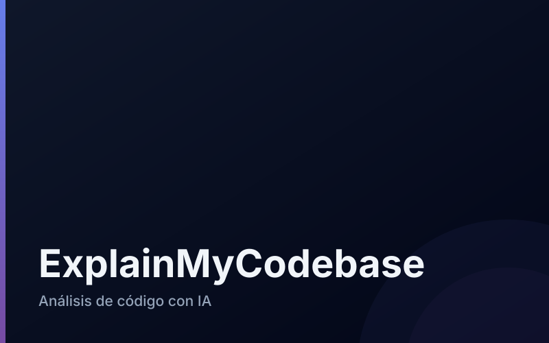
Herramienta que recibe un proyecto, recorre su estructura y genera con IA local una explicación de cada módulo para acelerar el onboarding técnico. Frontend en Next.js App Router y backend Express con parser propio.
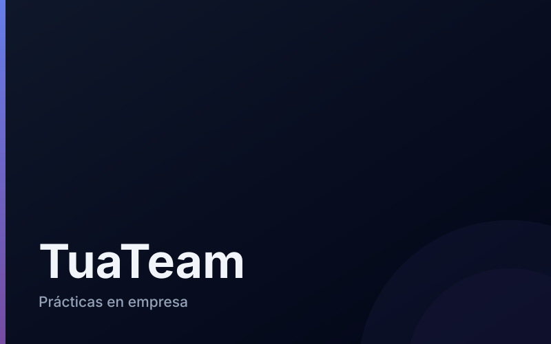
Conjunto de utilidades creadas durante las prácticas en empresa: extensión de Chrome propia para transcribir reuniones, verificador de emails, scraper configurable por YAML y enriquecedor de datos sobre Excel.
PWA de finanzas personales con gastos, ingresos y objetivos de ahorro. Si se pierde la conexión, las transacciones se encolan en el navegador y se sincronizan solas al volver la red.
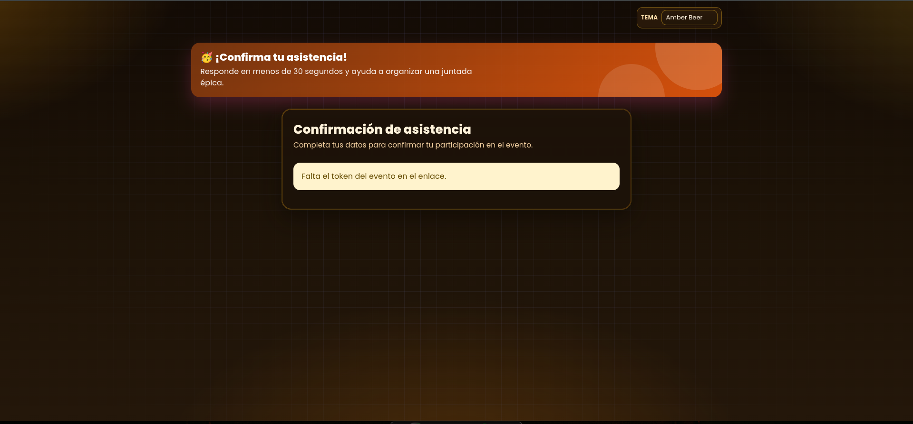
Gestor de confirmaciones para eventos. Cada evento genera un enlace público con token, reparte la lista de compra entre los asistentes confirmados y controla quién ha pagado, con recordatorio por WhatsApp.
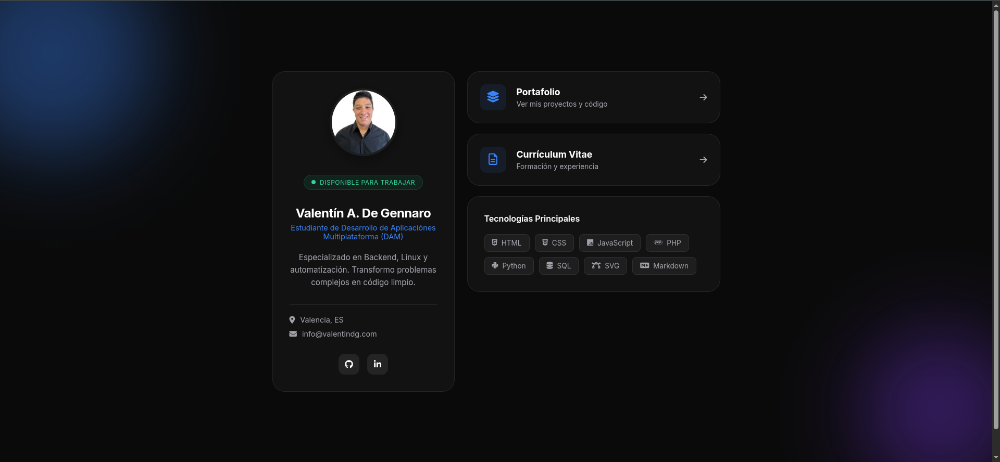
Tarjeta de visita digital que centraliza portafolio, CV y redes profesionales. Diseño glassmorphism con animaciones sutiles y gestión de tema mediante variables CSS.
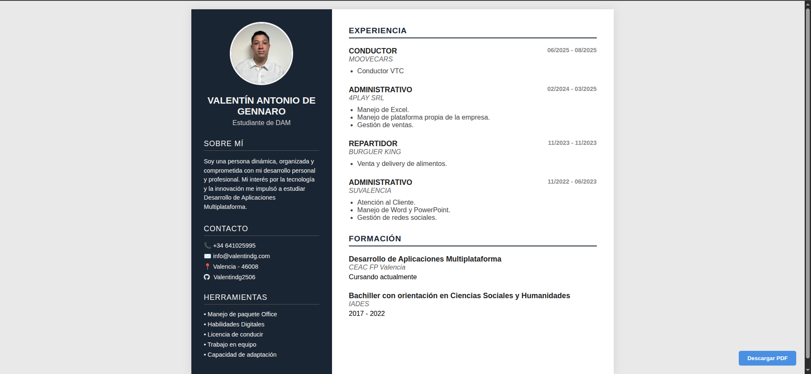
CV interactivo en una sola página con estructura de dos columnas: barra lateral oscura y contenido claro. Sin dependencias y con hoja de estilos específica para imprimirlo en papel.
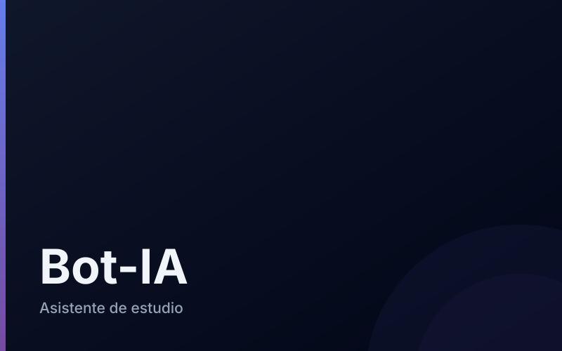
Asistente de estudio que detecta tareas pendientes en un portal educativo con Selenium y redacta un borrador con IA local siguiendo el estilo de los resúmenes de cada asignatura. Nunca entrega sin revisión humana.
Memoria de producto de una plataforma para aprender desarrollo web en español. Incluye análisis competitivo de 8 plataformas, hipótesis verificables, plan de validación y la arquitectura elegida. Aún sin código.
Práctica de IA: un agente genera código Python con un modelo local, lo valida por capas (sintaxis con AST, seguridad y ejecución) y reinyecta sus propios errores en el siguiente prompt para corregirse.
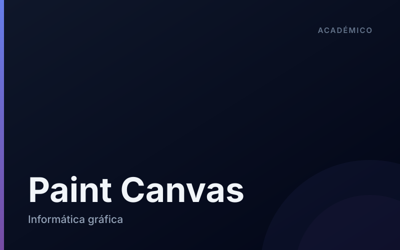
Ejercicio de informática gráfica construido en 20 pasos, desde dibujar un rectángulo hasta una app de pintura completa con selector de color, grosor y tipo de punta, y descarga del lienzo como PNG.
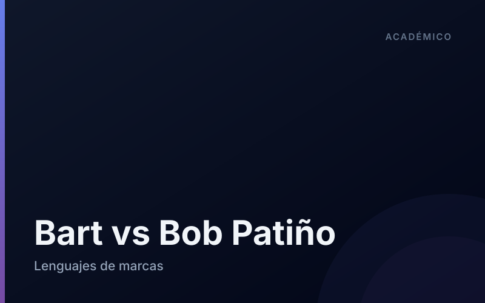
Videojuego 2D de clase levantado en 10 pasos: bucle de render, control de FPS, sprites propios y NPCs con movimiento autónomo, todo con clases de JavaScript y detección de colisiones.
E-commerce de clase desarrollado en 7 versiones desde cero: catálogo leído de base de datos, carrito en sesión y cierre de pedido con inserción en MySQL. Incluye diagramas entidad-relación y de flujo.
Panel de administración agnóstico de tabla: un único controlador consulta el esquema con SHOW TABLES y DESCRIBE para construir menú, formularios e INSERT de cualquier tabla sin escribir código por entidad.
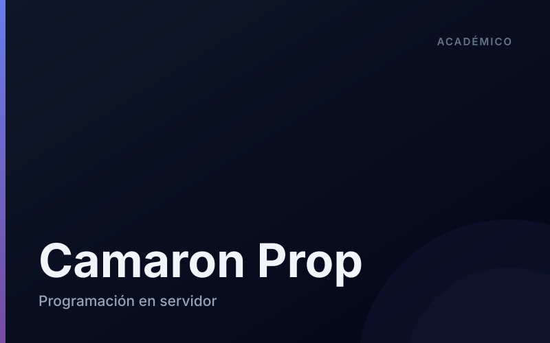
Portal inmobiliario de clase construido en 4 iteraciones: búsqueda de viviendas por localidad y rango de precio, encadenando un segundo filtro, y panel de administración para el CRUD de propiedades.
Práctica de integración de módulos empresariales: catálogo, carrito dinámico y formulario de cliente que consolidan un objeto JSON de pedido, con la preparación de la base de datos y sus permisos.
Recorrido por gráficos vectoriales sin librerías: desde formas básicas hasta un gráfico de barras animado con easing y tooltips, alimentado por datos y manipulado desde JavaScript.
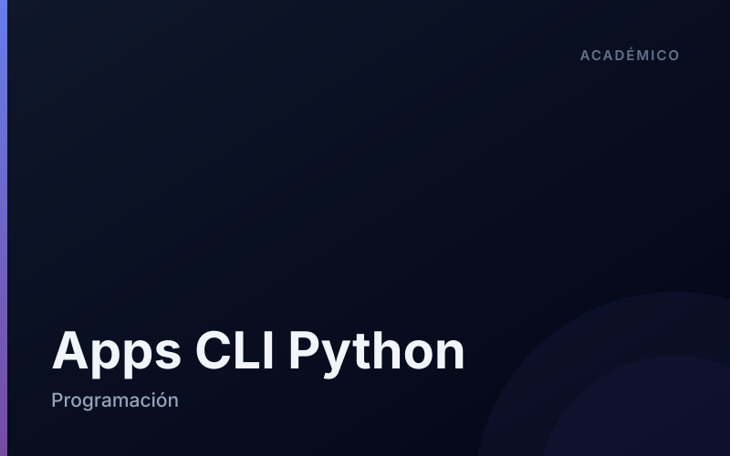
Colección de 13 aplicaciones de consola que practican programación orientada a objetos y persistencia con JSON y pickle sobre casos reales: cuenta bancaria, facturación con IVA, agenda y gestión de clientes.
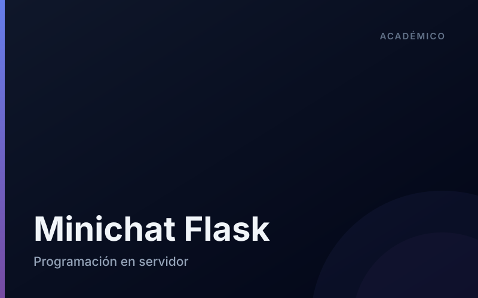
Introducción a Flask en 5 pasos: de un servidor mínimo a un chat multiusuario que refresca los mensajes por polling contra un endpoint JSON, sin WebSockets ni base de datos.
Ejercicio de estructuras de control: simulador de combate por turnos entre dos dragones con fase de entrenamiento, estadísticas que evolucionan, cálculo de daño y validación de toda entrada del usuario.
Ejercicio de clasificación y condicionales: un mago ataca un escudo energético con hechizos cuyo efecto depende de su rango y poder, resolviendo el duelo con cálculos derivados de parámetros variables.
Formación académica y experiencia en desarrollo de aplicaciones
CEACFP - Valencia, España
Grado Superior en DAM especializándome en desarrollo de aplicaciones multiplataforma. Formación integral en programación, bases de datos, diseño de interfaces gráficas, lenguajes de marcas, sistemas informáticos y entornos de desarrollo.
IADES - CABA, Argentina
Bachillerato completado con especialización en Humanidades. Formación en lenguas, historia, filosofía y ciencias sociales con enfoque humanístico.
Desarrollo Independiente
Diseño y desarrollo de aplicaciones web completas, de la base de datos al despliegue. Proyectos destacados: TinoProp CRM (inmobiliario multi-tenant con 7 roles jerárquicos), RoomManager (gestión de alquileres con Stripe y firma digital), CodePanel (espacio de trabajo con API JSON) y LocalCoder (IDE de escritorio con IA local en Tauri y Rust).
TuaTeam
Desarrollo de herramientas internas para el equipo comercial. Construí Soft-Scrappeo, un CRM de captación de leads B2B en Flask con roles, asignaciones y clasificación por código CNAE, además de una extensión de Chrome para transcribir reuniones, un verificador de emails y un scraper configurable.
Moove - Valencia, España
Servicio de transporte profesional de pasajeros. Responsabilidades: gestión de rutas, atención al cliente de calidad, cumplimiento de normativas de seguridad vial y mantenimiento del vehículo. Desarrollo de habilidades de organización y servicio al cliente.
4play - CABA, Argentina
Tareas administrativas diversas incluyendo gestión de documentación, atención al público, organización de archivos, procesamiento de datos y soporte administrativo general. Experiencia en Office y sistemas de gestión documental.
Burger King - Valencia
Reparto de pedidos a domicilio en motocicleta. Responsabilidades: gestión de tiempos de entrega, manejo de aplicaciones de delivery, optimización de rutas y servicio al cliente. Cumplimiento de normas de seguridad vial y estándares de servicio.
SuValencia - Valencia, España
Tareas administrativas diversas incluyendo gestión de documentación, gestion de redes sociales, organización de archivos, procesamiento de datos y soporte administrativo general. Experiencia en Office y sistemas de gestión documental. Creacion de la pagina web de la empresa y gestion de la misma.
¿Tienes un proyecto en mente? ¡Contáctame y trabajemos juntos!
Estoy disponible para proyectos freelance, colaboraciones o simplemente para charlar sobre tecnología y desarrollo.
Elige el método que más te convenga para ponerte en contacto conmigo.
Disponibilidad: Lunes a Viernes, 9:00 - 18:00
Tiempo de respuesta: 24-48 horas